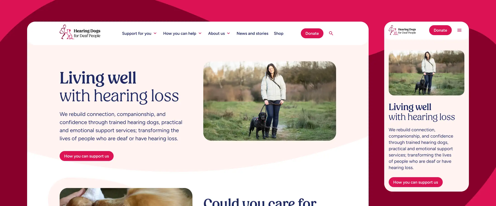
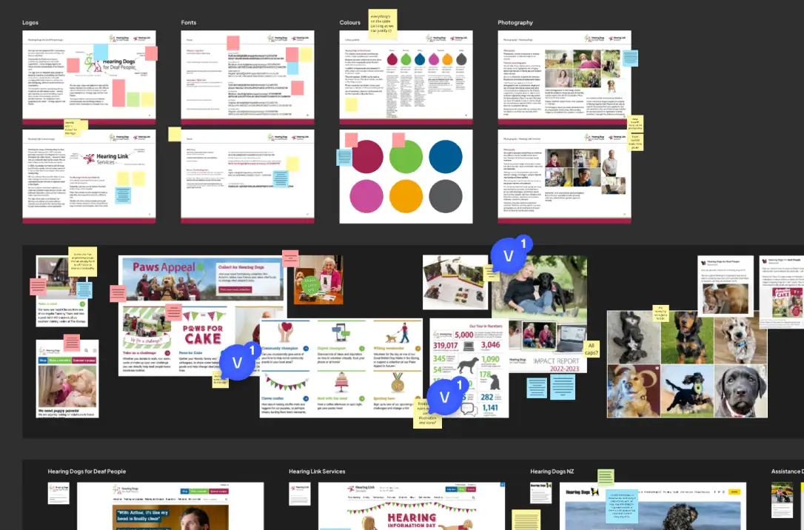
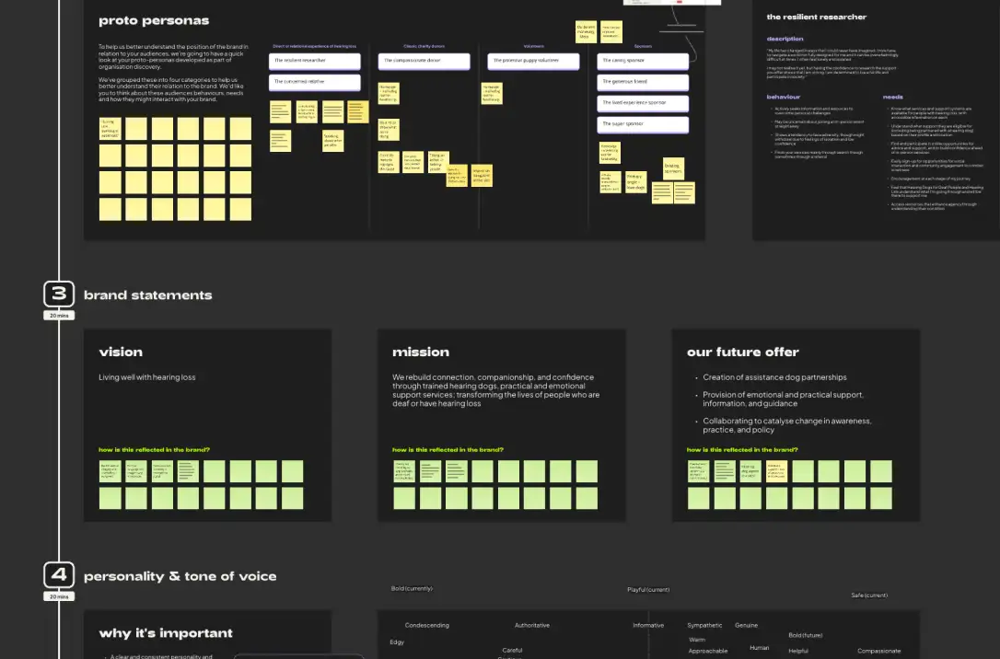
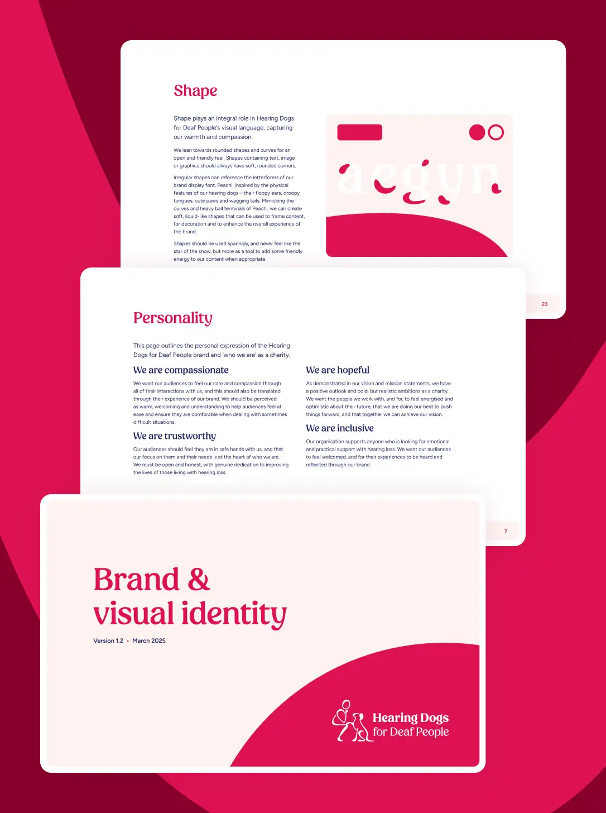
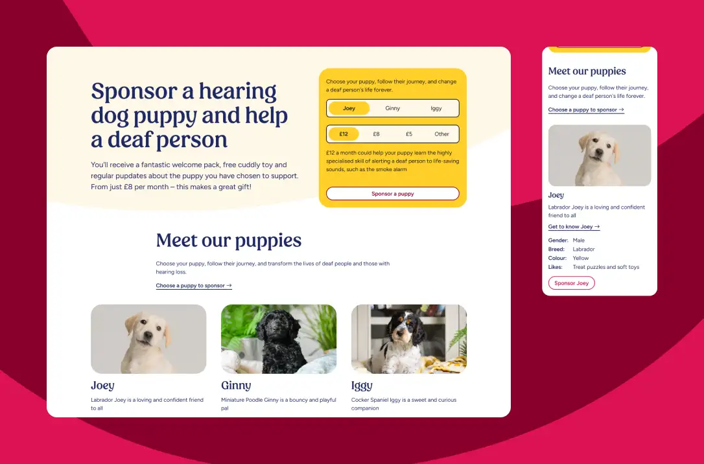
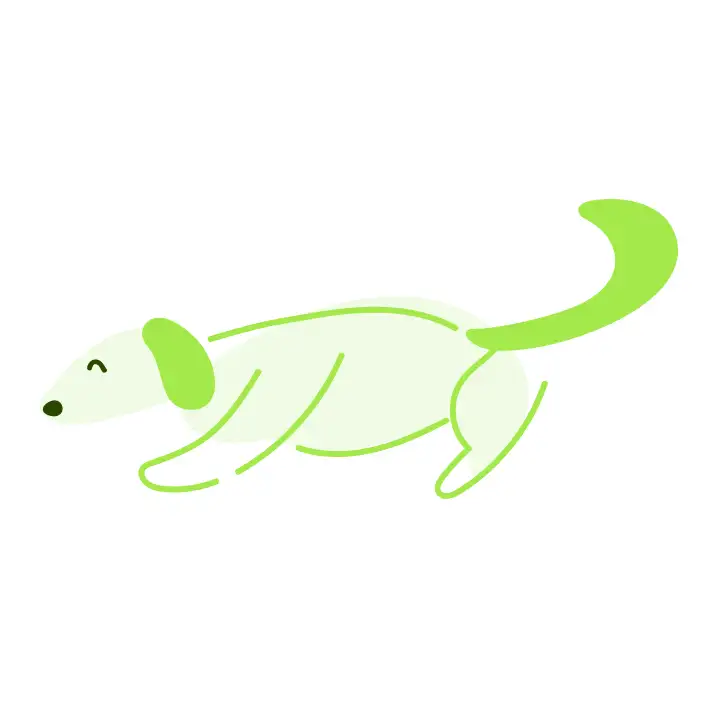

Visual identity
Creative direction
Web UI
A brand refresh and new, unified website for a charity supporting people to live well with hearing loss by training Hearing Dogs, Sound Support Dogs, and Companion Dogs, as well as providing essential advice and support.

Hearing Dogs for Deaf People and Hearing Link Services merged in 2017, but had been operating as two linked, but separate brands with separate websites since then. This project was born of a strategic need to unify the organisation and establish a single brand and website with multiple service offerings.
The project included a brand refresh which would inform the design of a new website to cater for all audiences.


Starting with a brand workshop involving key stakeholders, I framed the session by looking at personas, analysing behaviours, needs and goals, before unpicking vision and mission statements and establishing the client’s ambition and a future direction for the brand’s personality.
The workshop also provided an opportunity to examine the existing Hearing Dogs and Hearing Link Services brands, and how they are applied visually across the website and offline media. Far from a simple merging of two identities, we identified a number of issues that the client and their audiences had with the brand and its application, resulting in low engagement or lack of stand out in a busy charity space.
This informed the direction of the brand work, focusing on a more inclusive, friendly and compassionate visual identity, strengthening the emotional relationships that audiences form with the brand. From a refreshed thematic colour palette and the introduction of a gentle yet spirited new headline font, to a playful use of shapes and illustration, and bouncy motion principles, the new visual language reflected the aspects that were missing from the old look and feel.


The development of a UI pattern library encompassing the brand, has resulted in a unified website that brings the variety of services that Hearing Dogs for Deaf People offer together in a consistent brand and visual language. In addition, at launch the new website entered straight into the top 10 of the Silktide index for accessible UK charity websites, validating many decisions made during design and development where accessibility was a central objective.
Although the initial scope of this project was to aid the development of the website, further work including print media, from stationery to handbooks was briefed to ensure the visual expression of the brand was consistently applied.
The new approach to illustration was a huge hit with the client, leading to the further development of a suite of illustrations appropriate to the range of services they offer.
